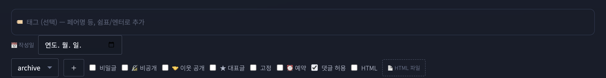

러브로그 · 글쓰기
글쓰기와 글 옵션
오른쪽 아래 ✎, 또는 게시판 위의 ✎ WRITE로 씁니다. 쓰던 글은 자동으로 임시저장됩니다.
글에 걸 수 있는 옵션
- 🔒 비밀글
- 비밀번호를 걸면 내용이 암호화 저장됩니다. 비밀번호는 잊으면 복구가 안 됩니다 — 관리 탭의 복구 비밀번호를 미리 만들어 두세요.
- 🔏 비공개
- 나만 볼 수 있게 저장(목록에도 나만 보임). 글 화면의 [공개로 전환]으로 언제든 공개. 초안·소장용에.
- 🤝 이웃 공개
- 서로 이웃(배너·이웃 홈 위젯에 서로 등록한 사이)에게만 보입니다. 비공개와 전체 공개의 중간.
- 📌 고정글
- 홈 상단에 고정 카드로 뜹니다.
- 📅 작성일
- 옛 로그를 옮겨 적을 때 그 날짜로 발행하면 목록에서도 그 자리에 정렬됩니다.
- ⏰ 예약 발행
- 시각을 정하면 그때까지 방문자에게 숨겨졌다가 자동 공개. 주인에겐 ⏰ 표시와 함께 항상 보입니다.
- 🏷 태그
- 제목 아래 태그 칸에 페어명·시리즈명 등을 달면(쉼표/엔터) 게시판 위에 태그 알약이 모여 눌러 좁혀 볼 수 있습니다. 이미 쓴 태그는 자동 완성.
- 💬 댓글
- 글마다 댓글 허용을 끄고 켤 수 있습니다.

사진 자리img/ll-write-options.png임시저장
실수로 창을 닫거나 새로고침해도 다시 글쓰기를 열면 이어서 쓸지 물어봅니다. 발행하면 사라지고, 비밀번호는 저장되지 않습니다.